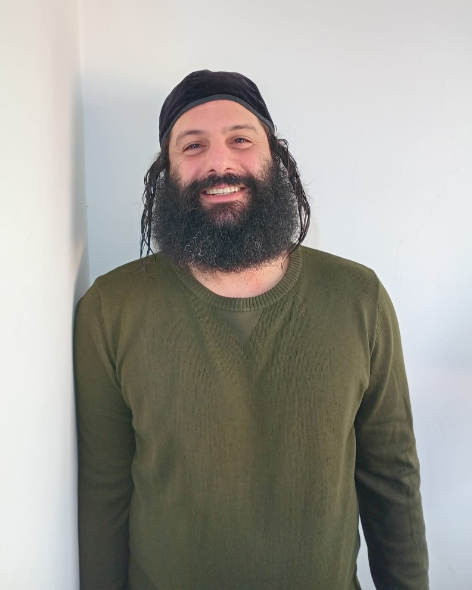

My STR Project
Technology I Used
- Jira
- TestRail
- GitHub
- HTML
- CSS
- ChatGPT
My Technical Skills
- Platform:Windows, Mobile(Android OS), Browser(Chrome, Firefox, Edge)
- Programming:Java,Selenium WebDriver, SQL, HTML, CSS
- Tools and Applications:TestRail
- Bug tracking:Jira, Monday
About Me

Hello everyone, I'm Adam Raiby and I'm a QA engineer
I studied at the Gal Matlon Automation College
Reliability, accuracy, and attention to detail are important to me
I like to think outside the box and learn new things
These are some of the reasons I love the world of testing
Contact Me
Phone: 058-62351824
E-mail: adamraiby26@gmail.com